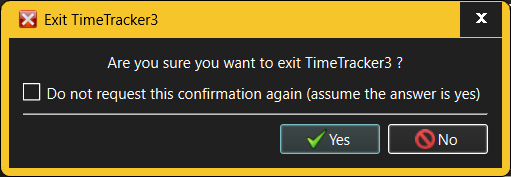

The Exit dialog is invoked when the user explicitly chooses to exit TimeTracker3.

The fields in the Exit dialog allow the user to specify:
When restarting TimeTracker3, the currently active workspace is cleanly closed before exiting. Specifically, if any Activity is in the process of being recorded, its recording will stop (and the corresponding Work unit will be logged) before the workspace is closed and exit occurs.
See also: -